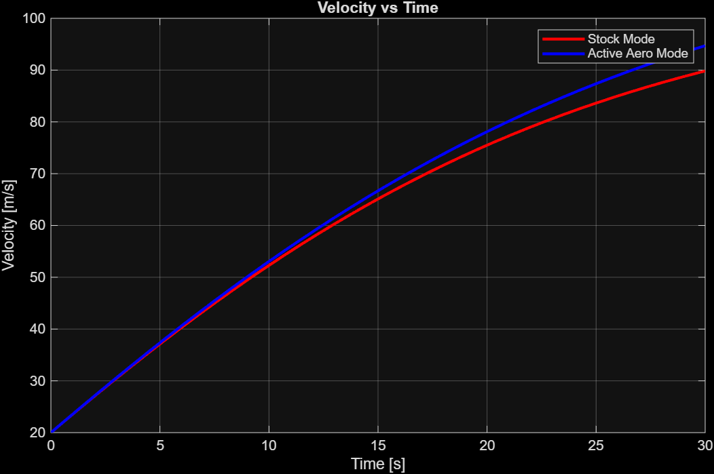
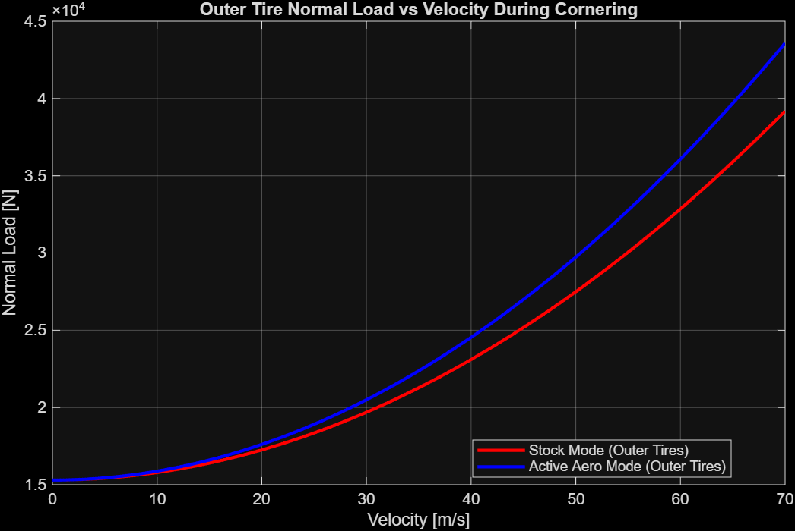
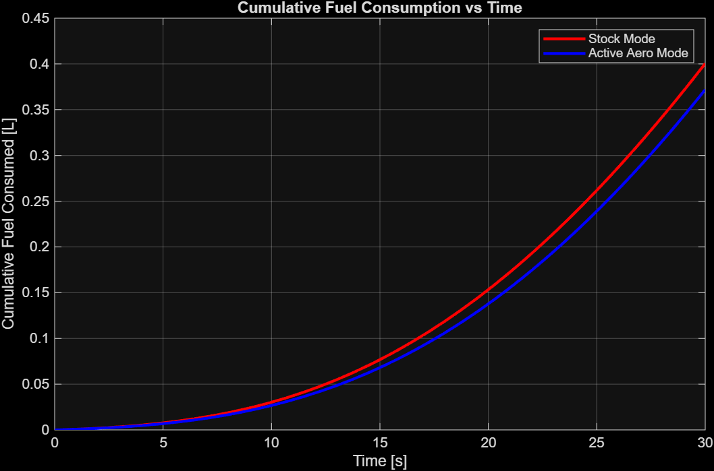

What This Project Is About
Active aerodynamics refers to movable body components that adapt in real time to manipulate airflow around a vehicle — reducing drag on straights, increasing downforce through corners. The 2014 McLaren P1 was chosen as the test vehicle because it was built from the factory with an active rear wing system, providing documented, reliable data to anchor the simulations rather than relying on estimates alone.
The goal was to quantify the performance delta between the P1's two aerodynamic states — stock mode (passive, higher drag) and active aero mode (wing deployed, lower drag coefficient) — across three areas: straight-line acceleration, cornering and tire behavior, and fuel consumption.
How the Simulations Were Built
All simulations were written from scratch in MATLAB. Vehicle parameters — mass, frontal area, drag coefficients, lift coefficient — were sourced directly from McLaren's published specifications and automotive catalogues, with clearly documented assumptions where real data was unavailable.
Straight-line dynamics were modeled using a forward Euler integration loop, stepping through time at 1ms intervals to track velocity and position under applied traction and aerodynamic drag. Cornering analysis used lateral force and load transfer equations to model how downforce from active aero redistributes normal loads across the tires. Fuel consumption was derived from the power required to overcome aerodynamic and rolling resistance forces at each timestep.
%% RVD Research Project Final Report % Surya Ramachandran %% Vehicle and Environment Parameters m = 1490+70; % kerb weight + driver [kg] g = 9.81; % acceleration due to gravity [m/s²] Width = 1.946; % width of car [m] Height = 1.188; % height of car [m] A = Width*Height; % frontal area [m²] rho = 1.293; % air density [kg/m³] cd_act = 0.28; % drag coefficient, active mode cd = 0.34; % drag coefficient, stock mode cl_act = 0.6; % lift coefficient, active mode (assumed) fr = 0.015; % rolling resistance coefficient (assumed) Fxr = 4000; % traction force rear [N] Fxf = 2000; % traction force front [N] v = linspace(0,70,500); % velocity range [m/s] %% Straight-Line Properties dt = 0.001; tf = 30; t = (0:dt:tf); N = length(t); x_stock = zeros(1,N); v_stock = zeros(1,N); x_act = zeros(1,N); v_act = zeros(1,N); v_stock(1) = 20; v_act(1) = 20; % rolling start [m/s] a_stock = @(v) ((Fxr+Fxf)-(fr*m*g)-(0.5*rho*cd*A.*v.^2))/m; a_act = @(v) ((Fxr+Fxf)-(fr*m*g)-(0.5*rho*cd_act*A.*v.^2))/m; for k = 2:N v_stock(k) = v_stock(k-1) + a_stock(v_stock(k-1))*dt; x_stock(k) = x_stock(k-1) + v_stock(k-1)*dt; v_act(k) = v_act(k-1) + a_act(v_act(k-1))*dt; x_act(k) = x_act(k-1) + v_act(k-1)*dt; end quarter_mile = 402.336; [~,idx_stock] = min(abs(x_stock-quarter_mile)); [~,idx_act] = min(abs(x_act-quarter_mile)); %% Cornering and Tire Properties Fz = m*g*ones(size(v)); df_act = 0.5*rho*cl_act*A.*(v.^2); Fz_act = Fz+df_act; Fy = 0.85*Fz .*(1-0.0001*v); Fy_act = 0.85*Fz_act.*(1+0.00005*v); alpha = atan(Fy./Fz); alpha_act = atan(Fy_act./Fz_act); h_CG = 0.5; tw = 1.6; cornering_radius = 50; a_y = (v.^2)/cornering_radius; delta_Fz = (m.*a_y.*h_CG)./tw; Fz_outer_stock = Fz +delta_Fz/2; Fz_inner_stock = Fz -delta_Fz/2; Fz_outer_act = Fz_act+delta_Fz/2; Fz_inner_act = Fz_act-delta_Fz/2; %% Fuel Consumption Fuel_stock = zeros(1,N); Fuel_act = zeros(1,N); eff = 0.3; fuel_energy_density = 42.5e6; for k = 2:N P_stock = (0.5*rho*cd *A*v_stock(k-1)^3)+(fr*m*g*v_stock(k-1)); P_act = (0.5*rho*cd_act*A*v_act(k-1)^3) +(fr*m*g*v_act(k-1)); Fuel_stock(k) = Fuel_stock(k-1)+(P_stock/(eff*fuel_energy_density))*dt; Fuel_act(k) = Fuel_act(k-1) +(P_act /(eff*fuel_energy_density))*dt; end Fuel_quarter_stock = Fuel_stock(idx_stock); Fuel_quarter_act = Fuel_act(idx_act); lap_distance = 5000; Fuel_savings_per_lap = (Fuel_quarter_stock-Fuel_quarter_act)/quarter_mile*lap_distance; Total_fuel_savings = Fuel_savings_per_lap*30; fprintf('Fuel saved per lap: %.3f L\n', Fuel_savings_per_lap); fprintf('Fuel saved over 30 laps: %.3f L\n', Total_fuel_savings);
What the Simulations Showed
The results were split across three areas. Each told a consistent story: active aero delivers meaningful, quantifiable gains — not just in outright speed, but in how the car manages grip and energy over a full race distance.



Conclusions
Straight-Line Performance
Reducing the drag coefficient from 0.34 to 0.28 resulted in a consistent speed advantage that widened over time — reaching ~18 km/h at the 30-second mark. The engine's power budget is freed up as drag decreases, compounding the gain.
Cornering & Tire Grip
Active aero generates additional downforce at speed, increasing normal loads on both inner and outer tires. Slip angle analysis confirmed that this translates to improved cornering grip — tires in active aero mode maintain higher slip angles at velocity, indicating greater lateral force capacity.
Fuel Efficiency
Less aerodynamic resistance means less power required at any given speed. The simulation found fuel savings of ~56 mL per lap, accumulating to 1.6 L over 30 laps — a non-trivial gain in a motorsport context where every gram of fuel saved is also a gram less to carry.
Limitations & Future Work
The study relied on publicly available specifications and documented assumptions where data was unavailable. Given more resources, CFD simulation and Pacejka Magic Formula tire modeling would produce significantly more detailed results — particularly for the tire compound analysis section.
Project Materials
Full report and source code available below. The report is typeset in LaTeX; the code is fully commented MATLAB.